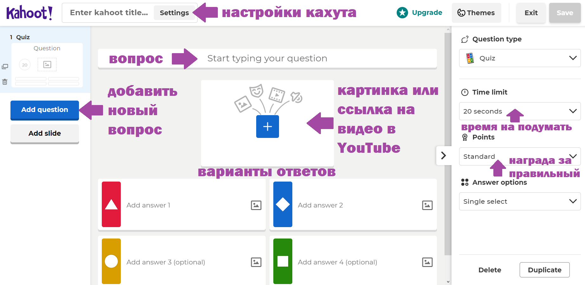
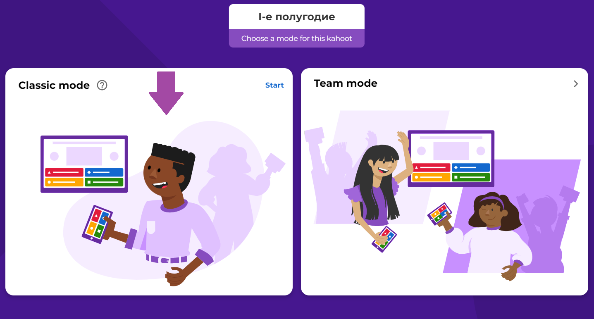
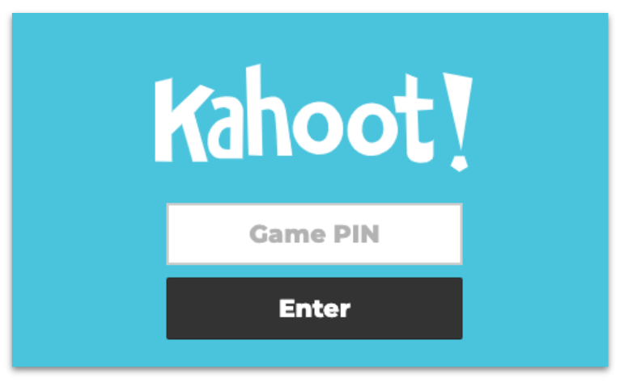

Добро пожаловать в методическую копилку для преподавателей Алгоритмики!
Этот ресурс призван помочь преподавателю при работе на занятиях, преодолению возникающих трудностей
Пожалуйста, внимательно прочтите инструкцию как работать с материалами данного ресурса!
Работа с таблицами по проектным
Как работать с таблицами по начислению фанкоинов:
Таблица для использования на каждом занятии. Максимальное число начислений - 13 фанкоинов. Вкладка в Таблице "Для занятий". Каждый пункт заполняется преподавателем на свое усмотрение при выполнении учеником задач на платформе. Подсчет проводится автоматически
Таблица для проектных работ. В каждом столбце есть пункты, которые должны быть в проекте. Преподаватель заполняет их в процессе проверки. Подсчет общей суммы за проект производится автоматически. Ученик может не выполнить некоторые пункты, но, их количество не должно превышать 2-х. Преподаватель на свое усмотрение может начислять лишь часть суммы за пункт, если ученик недовыполнил эту часть, хотя и начинал его
Как использовать таблицы в режиме онлайн:
Таблицы можно скопировать в свой Google-Диск. Для этого нужно иметь свою учетную запись гугл аккаунта и скопировать файлы в него. Создавайте отдельную таблицу для каждой Вашей группы, переименовав таблицу соответствующим образом
Для использования файла в своем диске нажмите "Файл" => "Создать копию"
Ввести название группы и нажать "ОК"
Как использовать таблицы в режиме оффлайн:
Таблицы можно скопировать на свой персональный компьютер при условии, что есть вероятность, что Ваши файлы никто в ней не тронет и они не затеряются
Для использования файла в оффлайн режиме нажмите "Файл" => "Скачать" => "Microsoft Excel (XLSX)"
Инструкция работы в Kahoot:
Дополнительный ресурс Kahoot используется для повторения и закрепления пройденного материала в интересной и увлекательной теме. Kahoot - это игровой тест, где дети должны быстро отвечать на вопросы и зарабатывать очки.
Чтобы начать работу нужно открыть сайт по ссылке: https://create.kahoot.it
Зарегистрироваться или зайти в свою учетную запись.
Рекомендуется регистрироваться под учетной записью учителя (Более подробно следуйте указаниям на сайте, включите автоперевод страниц на русский)

Как играть в Kahoot:
Чтобы начать работу с готовыми кахутами, достаточно нажать на соответствующую тему кахута.
Выбрать вариант игры

Дождаться пока учащиеся не подключатся к игре и нажать Start.
Для того, чтобы подключиться к игре они должны зайти по другой ссылке: kahoot.it
Ввести Game Pin (Гейм Пин) и придумать себе Nickname (Никнеймы):
